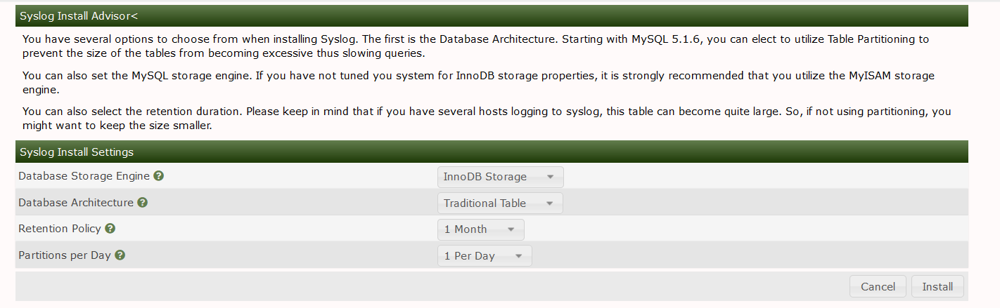
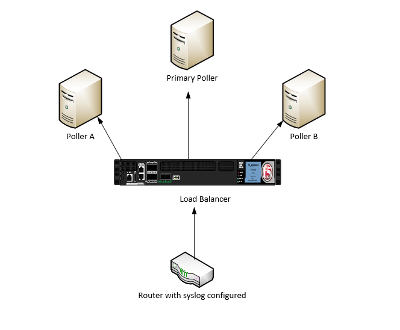
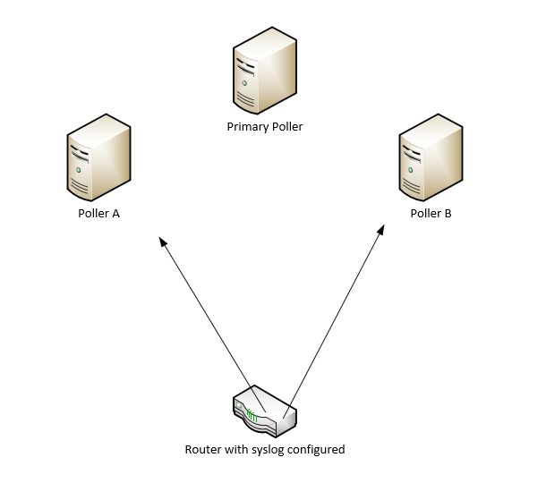
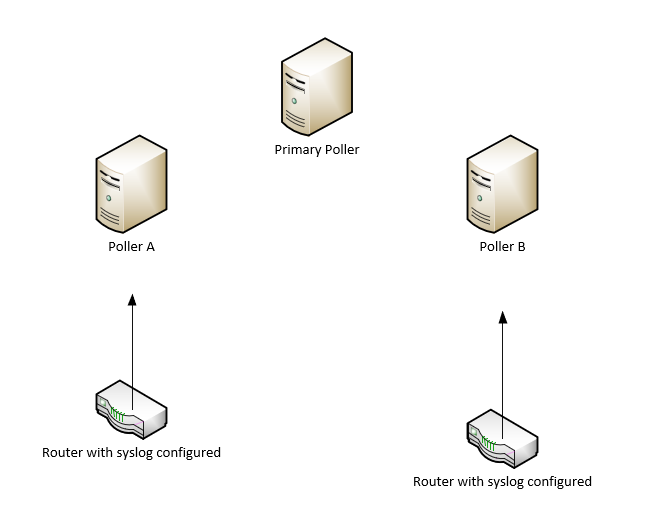
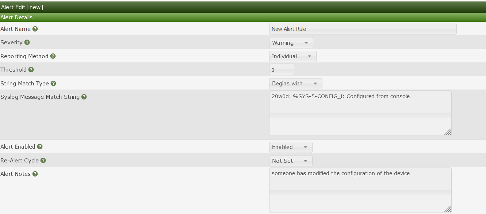
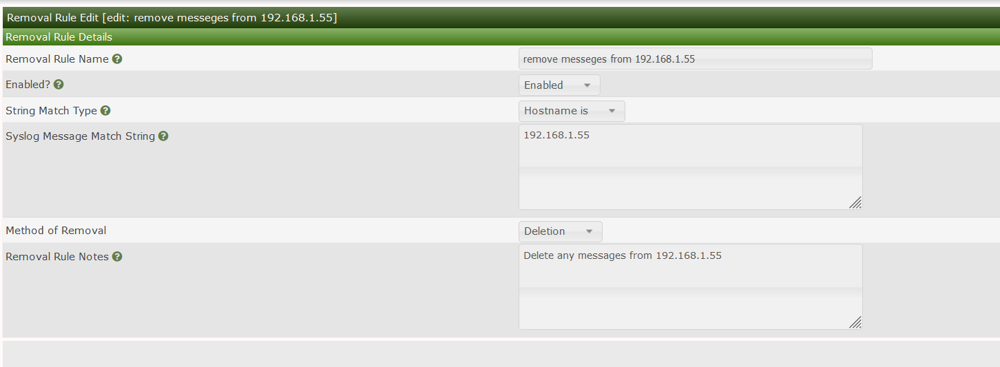

The syslog plugin is a Cacti plugin that has been around for more than a decade. It was inspired by the 'aloe' and 'h.aloe' plugins originally developed by the Cacti users sidewinder and Harlequin in the early 2000's. As you will be able to see from the ChangeLog, it has undergone several changes throughout the years, and remains, even today when you have enterprise offering from both Elastic and Splunk, remains a relevant plugin for small to medium sized companies.
It provides a simple Syslog event search an Alert generation and notification interface that can generate both HTML and SMS messages for operations personnel who wish to receive notifications inside of a data or network operations center.
For log events that continue to be generated frequently on a device, such as smartd's feature to notify every 15 minutes of an impending drive failure, can be quieted using syslog's 'Re-Alert' setting.
Syslog also provides multipoller support which allows for scalability and redundancy by leveraging multiple servers rules can be created on the main poller and pushed to the remotes for ease of management or each server can work independently
Message filter
Message search
Output to screen or file
Date time picker
Event Alerter
Event Removal (for Events you don't want to see)
Filter events by Cacti Graph window from Cacti's Graph View pages
Use of native MySQL and MariaDB database partitioning for larger installs
Remote Log Server connection capabilities
Custom column mappings between Remote Log Server and required Syslog columns
Remote poller support
If you are upgrading to 2.0 from a prior install, you must first uninstall syslog and ensure both the syslog, syslog_removal, and syslog_incoming tables are removed, and recreated at install time.
In addition, the rsyslog configuration has changed in 2.5. So, for example, to configure modern rsyslog for Cacti, you MUST create a file called cacti.conf in the /etc/rsyslog.d/ directory:
Edit /etc/rsyslog.d/cacti.conf
$ModLoad imudp
$UDPServerRun 514
$ModLoad ommysql
$template cacti_syslog,"INSERT INTO syslog_incoming(facility_id, priority_id,
program, logtime, host, message) \
values (%syslogfacility%, %syslogpriority%, '%programname%',
'%timegenerated:::date-mysql%', '%HOSTNAME%', TRIM('%msg%'))", SQL
*.* >localhost,my_database,my_user,my_password;cacti_syslog
This is a change from versions 2.0 to 2.4 and below, which had the following file format:
$ModLoad imudp
$UDPServerRun 514
$ModLoad ommysql
$template cacti_syslog,"INSERT INTO syslog_incoming(facility_id, priority_id, program, date, time, host, message)
values (%syslogfacility%, %syslogpriority%, '%programname%', '%timereported:::date-mysql%', '%timereported:::date-mysql%', '%HOSTNAME%', TRIM('%msg%'))", SQL
. >localhost,my_database,my_user,my_password;cacti_syslog
for centos/rhel systems you will all need to install the rsyslog-mysql package
yum install rsyslog-mysql
systemctl resatrt rsyslog
If you are upgrading to version 2.5 from an earlier version, make sure that you update this template format and restart rsyslog. You may lose some syslog data, but doing this in a timely fashion, will minimize data loss.
Ensure you restart rsyslog after these changes are completed. Other logging servers such as Syslog-NG are also supported with this plugin. Please see some additional documentation here: Cacti Documentation Site
We are using the pure integer values that rsyslog provides to both the priority and facility in this version syslog, which makes the data collection must less costly for the database. We have also started including the 'program' syslog column for searching and storage and alert generation.
To setup log forwarding from your network switches and routers, and from your various Linux, UNIX, and other operating system devices, please see their respective documentation.
For Cisco routers switches configuration may look something like this
SW-3750#conf t
Enter configuration commands, one per line. End with CNTL/Z.
SW-3750(config)#logging host 192.168.1.194
SW-3750(config)#logging facility local7
SW-3750(config)#logging rate-limit 100
SW-3750(config)#
Finally, it's important, especially in more recent versions of MySQL and MariaDB to set a correct SQL Mode. These more recent SQL's prevent certain previously allowable syntax such as an empty data and certain group by limitations in the SQL itself. Therefore, you need to ensure that the SQL mode of the database is correct. To do this, first start by editing either /etc/my.cnf or /etc/my.cnf.d/server.cnf and inserting the SQL mode variable into the database configuration. For example:
After this change, you should log into the mysql server and run the following command:
mysql> show global variables like 'sql_mode';
And ensure that it matches the setting that you placed in the database configuration. If it does not, please search for the configuration that is making this SQL mode other than what you required. More recent versions of MySQL and MariaDB will source multiple database configuration files.
1.) Copy the syslog files over to /var/www/html/cacti/plugins
2.) ensure permissions are correct the files should typically be owned by the webserver user
chown -R apache:apache syslog
3.) copy config.php.dist to config.php
5.) You have two options for storing syslog information you can either use the existing Cacti Database or use a dedicated database for syslog as syslog databases especially for large networks can grow pretty quick it may be wise to create a dedicated database. To use a dedicated DB first create a database in mysql and assign a user you will then change
$use_cacti_db = true;
to
$use_cacti_db = false;
if you intend to use the cacti DB leave config.php as default
6.) install the plugin in the plugins tab located in Console >> configuration >> plugins
7.) You will be presented with the plugin install wizard with options on how you would like the Syslog plugin to be installed options include DB arch and retention time

You will also need to ensure the cacti user is granted select on the Syslog database
GRANT SELECT ON syslog.* TO 'cacti'@'localhost';
To leverage SNMP traps as mentioned you will need to install SNMPTT. SNMPTT is used to translate OID information passed from the device to a readable format SNMPTT will then write that data into syslog for the Syslog plugin to ingest.
Follow these steps to complete the setup
1.) yum install snmptt
2.) enable snmptt and snmptrapd
systemctl enable snmptrapd
systemctl enable snmptt
systemctl start snmptt
systemctl start snmptrapd
3.) Now that snmptt and snmptrapd are started and enabled you will first need to modify the snmptrapd systemd file to include -on in the startup options
the file is located in /etc/sysconfig/snmptrapd and should look like this after
# snmptrapd command line options
# '-f' is implicitly added by snmptrapd systemd unit file
OPTIONS="-on"
4.) Now you need to modify the snmptrapd config file to receive snmptraps by default snmptrapd will not process any traps until you configure it to do so you will also need to tell snmptrapd to forward the received traps over to snmptt
Here is an example of configuring snmptrapd to receive snmptraps from a device using the public snmp string and forwarding it over to snmptt
# Example configuration file for snmptrapd
#
# No traps are handled by default, you must edit this file!
#
# authCommunity log,execute,net public
# traphandle SNMPv2-MIB::coldStart /usr/bin/bin/my_great_script cold
authCommunity log,execute,net public
traphandle default /usr/sbin/snmptthandler
after making all of the changes to the snmptrapd configuration restart the snmptrapd process for the changes to take effect.
5.) configure snmptt.ini to operate in daemon mode
By default snmptt already writes data to syslog all that is left is to configure daemon mode in snmptt.ini which is located in /etc/snmp
# Set to either 'standalone' or 'daemon'
# standalone: snmptt called from snmptrapd.conf
# daemon: snmptrapd.conf calls snmptthandler
# Ignored by Windows. See documentation
mode = daemon
6.) use the snmptt cacti connector
By default since snmptt resides on the syslog server all of the IP information will appear as if its coming from localhost to fix this there is a cacti snmptt connector which will format the trap to be ingested to the syslog db it is located in the contrib folder
The syslog plugin can be deployed on each poller or select pollers each poller will need to be configured with rsyslog each poller will need to be configured with a syslog config_local file
There are a few deployment approaches
1.) Multiple Pollers with a load balancer for syslog

2.) Multiple pollers no balancer but devices send syslog to multiple pollers

3.) Multiple pollers but devices are assigned to send Syslog to a specific poller for example poller A and device A is at one location

To setup each remote poller you will need to enable and configure rsyslog with the following steps
1.) decide if you will use the cacti DB or a separate DB
You have two options for storing Syslog information you can either use the existing Cacti Database or use a dedicated database for Syslog as Syslog databases especially for large networks can grow pretty quickly it may be wise to create a dedicated database. To use a dedicated DB first create a database in MySQL and assign a user then
$use_cacti_db = true;
to
$use_cacti_db = false;
2.) If you decide to use the cacti database simply leave config_local.php default
$use_cacti_db = true;
3.) If you decide to use a separate DB fill out the Database detailing config_local.php
4.) create a cacti.conf file in /etc/rsyslog.d and fill out either your separate DB details or your main cacti DB details
$ModLoad imudp
$UDPServerRun 514
$ModLoad ommysql
$template cacti_syslog,"INSERT INTO syslog_incoming(facility_id, priority_id,
program, date, time, host, message) \
values (%syslogfacility%, %syslogpriority%, '%programname%', '%timereported:::date-mysql%',
'%timereported:::date-mysql%', '%HOSTNAME%', TRIM('%msg%'))", SQL
*.* >localhost,my_database,my_user,my_password;cacti_syslog
5.) install rsyslog-mysql package to allow rsyslog to write to mysql
yum install rsyslog-mysql
6.) restart rsyslog
systemctl restart rsyslog
7.) if you would like for rules to be replicated from the main poller to the remotes you will need to enable the following syslog settings found in configuration >> settings >> syslog
if you wish to have each poller operate independently there is no need to enable these options.
Alert rules are used to generate alerts in the cacti log they are also used to send out email alerts and command execution to cut tickets to upstream ticketing systems or perform initial troubleshooting scripts can also be leveraged to call on services such as slack or trello for alerting teams.
you can leverage the built in variable substitution to format the input to the script

The Syslog plugin allows administrators to delete incoming messages so they are not stored in the DB. For example, if you are not interested in seeing Syslog messages everytime a user logs into a device you may add a rule to delete the message.
to do this click on the Syslog settings tab in the console then click removal rules

Bug and feature enhancements for the syslog plugin are handled in GitHub. If you find a first search the Cacti forums for a solution before creating an issue in GitHub.
The syslog plugin has been in development for well over a decade with increasing functionality and stibility over that time. There have been several contributors to thold over the years. Chief amongst them are Jimmy Conner, Larry Adams, SideWinder, and Harlequin. We hope that version 2.0 and beyond are the most stable and robust versions of syslog ever published. We are always looking for new ideas. So, this won't be the last release of syslog, you can rest assured of that.
Copyright (c) 2004-2024 The Cacti Group